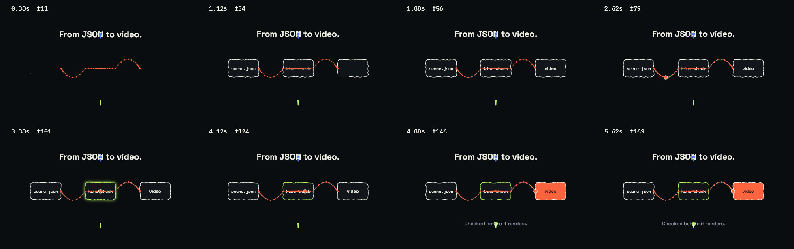

Checked without watching.
An agent cannot watch a video. Each command returns something it can read: one image of many frames, a JSON list of problems, the box of every layer at a given time.
kine look card-flip.json --boxes
Frames spread over the scene in one image, each with its time and frame number. With --boxes every layer is outlined and the top-level ones are named.

kine look explainer.json --trails
Each moving layer's path drawn over the frames, a dot for every frame, so their spacing shows where it eases, overshoots or stops. --onion 3 draws the three frames before each one over it, and kine probe --curve title.x gives a key's value and speed at every frame as JSON.


kine check problems.json
Every problem at once, errors first, each with its layer, time range and a fix. Contrast is measured against the pixels actually behind the text. When the scene has sound it mixes and measures it too, and reports a voice cut off or masked by the music, an effect that lands late, and a mix off its loudness target. The command exits with status 1 while there are errors.
{ "canvas": {"w": 1920, "h": 1080, "fps": 30, "bg": "#f2f0e8"}, "layers": [ {"id": "panel", "type": "rect", "x": "50%", "y": "62%", "w": 1300, "h": 260, "radius": 20, "fill": "#ff633f"}, {"id": "title", "type": "text", "text": "Quarterly results", "x": "50%", "y": "6%", "size": 120, "fill": "#0a0c10", "dur": 4}, {"id": "label", "type": "text", "text": "Orders up 18 percent on last year", "x": "50%", "y": "62%", "size": 60, "fill": "#ff9a80", "dur": 1.2}, {"id": "note", "type": "text", "text": "Source: annual report", "x": "50%", "y": "88%", "fontSize": 40, "fill": "#4a4f5c", "dur": 4} ]}{
"ok": false,
"errors": 1,
"warnings": 2,
"issues": [
{
"level": "error",
"code": "text-offscreen",
"layer": "title",
"from": 0.0,
"to": 4.0,
"message": "text box [469.7, -6.0, 1450.3, 135.6] leaves the 1920x1080 canvas",
"fix": "move it inward, lower size, or set maxWidth"
},
{
"level": "warning",
"code": "read-time",
"layer": "label",
"from": 0.0,
"to": 1.2,
"message": "7 words on screen for 1.20s; viewers need ~2.5s",
"fix": "extend dur or cut words"
},
{
"level": "warning",
"code": "contrast",
"layer": "label",
"from": 0.72,
"to": 0.72,
"message": "contrast against what is behind it is 1.4:1 (want 4.5:1); it overlaps 'panel'",
"fix": "move it clear of 'panel', or add a box or a shadow"
},
{
"level": "info",
"code": "renamed-key",
"layer": "note",
"message": "'fontSize' read as 'size'",
"fix": "write 'size'"
}
],
"duration": 4.0
}kine probe card-flip.json --at 1.5
Each layer's start and end, and at a given time, where every visible layer is on screen in pixels. Trimmed here to four layers: the title, the back of the first card, which has turned past halfway, and the text on the second card.
{
"at": 1.5,
"visible": {
"title": {
"rect": [467, 158, 1453, 252],
"alpha": 1.0,
"type": "text",
"scale": 1.0,
"text": "Change a line. Flip a card."
},
"card-1-back": {
"rect": [235, 464, 657, 762],
"alpha": 1.0,
"type": "group",
"scale": 0.9
},
"card-1-new": {
"rect": [292, 570, 598, 651],
"alpha": 1.0,
"type": "text",
"scale": 0.9,
"text": "+ \"dur\": 4.5"
},
"card-2-old": {
"rect": [774, 540, 1134, 614],
"alpha": 1.0,
"type": "text",
"scale": 1.1,
"text": "- \"text\": \"Q3\""
}
}
}- While it is written
kine watch scene.jsonmakes the contact sheet again each time the file is saved, so an agent or a person keeps one image open beside the scene.- More overlays
--onion 3draws the three frames before each one over it, fainter the older they are.--wiredraws every model's triangles;--depthshows each 3D stage's depth image.--at 0.5 2 endpicks the times instead of even spacing.- One key over time
kine probe scene.json --curve title.xprints a key's value at every frame and how fast it changes, where it holds still and its fastest frame.- Brand rules
- In a branded scene
kine checkalso reports text and chart colours below the contrast they need, a logo drawn too small, and a scene overriding a part the brand locks.--brand-strictadds colours and fonts the brand does not have, and text outside its safe area.
MCP
kine mcp serves the same tools to MCP clients over stdio. Tools take a scene as a file path or as the JSON object itself, and the look and still tools return the image inline.
{
"mcpServers": {
"kinescript": {"command": "kine", "args": ["mcp"]}
}
}- kine_docsthe scene reference
- kine_checkproblems as JSON
- kine_looka contact sheet, as an image
- kine_stillone frame, as an image
- kine_probetimeline and layer boxes
- kine_rendera draft, a range or the final file
- kine_voicespeaks a scene's text and times its words
- kine_feedbackreads and answers the notes left in the editor
- kine_brandthe brand library, everything the brand wizard does
kine docs prints the whole scene reference, about 400 lines: rules, a complete scene, every layer type with its defaults, and recipes. It is written to fit in a model's context.